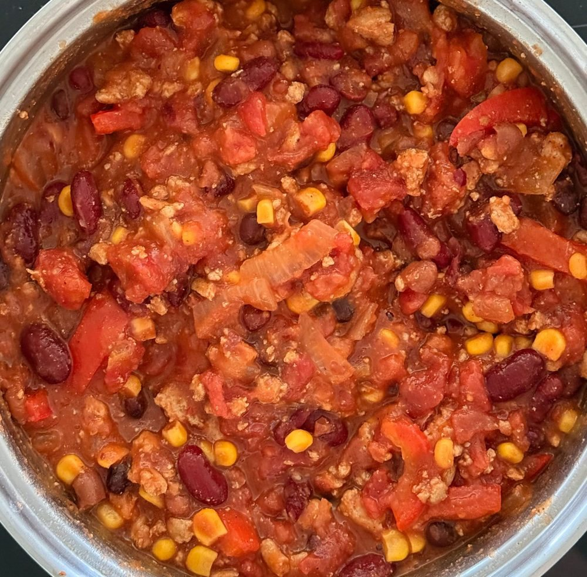
Want to cook it yourself? The recipe is below.
The chili is mild on purpose. Turn it up (or cool it down) with these.
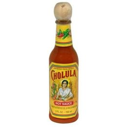
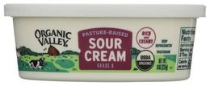
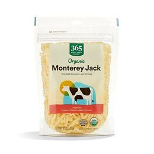
Every ingredient is organic. Here’s exactly what went into the pot. Quantities are for one large pot.
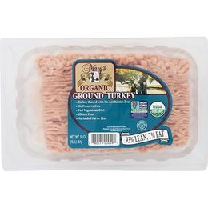
2×Mary’s Organic Ground Turkey, 2 × 16 oz: the “carne” in this chili.
Organic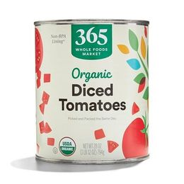
4×365 Organic Diced Tomatoes, 4 × 28 oz cans.
Organic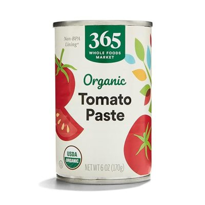
365 Organic Tomato Paste, 6 oz can.
Organic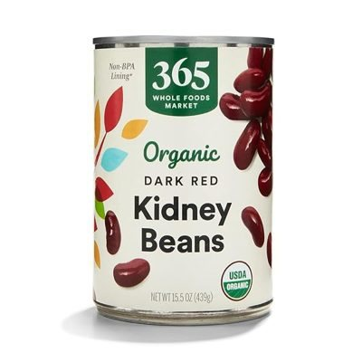
4×365 Organic Dark Red Kidney Beans, 4 × 15.5 oz cans.
Organic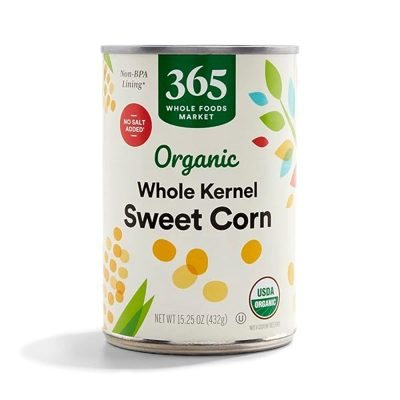
365 Organic Whole Kernel Corn, no salt added.
Organic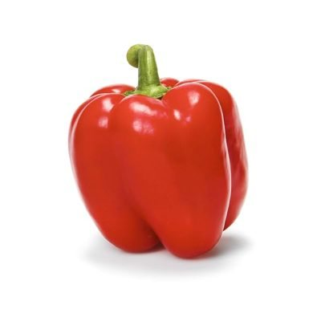
2×2 fresh organic red bell peppers.
Organic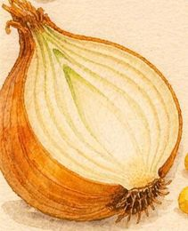
Fresh organic onion, softened until sweet.
Organic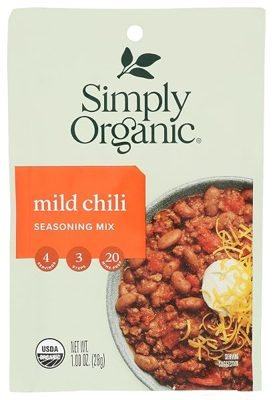
Simply Organic Mild Chili Seasoning Mix: all flavor, gentle heat.
Organic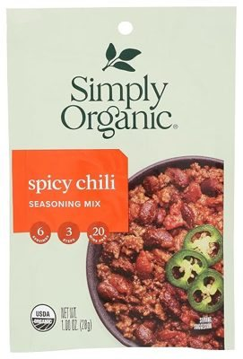
Simply Organic Spicy Chili Seasoning Mix, for extra spice to taste at the end.
Organic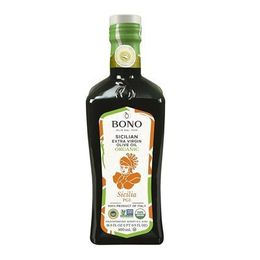
Bono Organic Sicilian Extra Virgin Olive Oil, for cooking the turkey, onion and peppers.
OrganicOne large pot, one pan, and a lot of stirring.
French white bread or rice. Scatter fresh cilantro on top for color and flavor.
Sour cream for smoothness and less heat, hot chili sauce for more, grated cheese for flavor.
Enjoy right away, or let it sit overnight and reheat just the portion you want.
Keeps well in the freezer for a few weeks.
The pot stays mild so everyone can enjoy it. Heat lives in the hot sauce bottle.